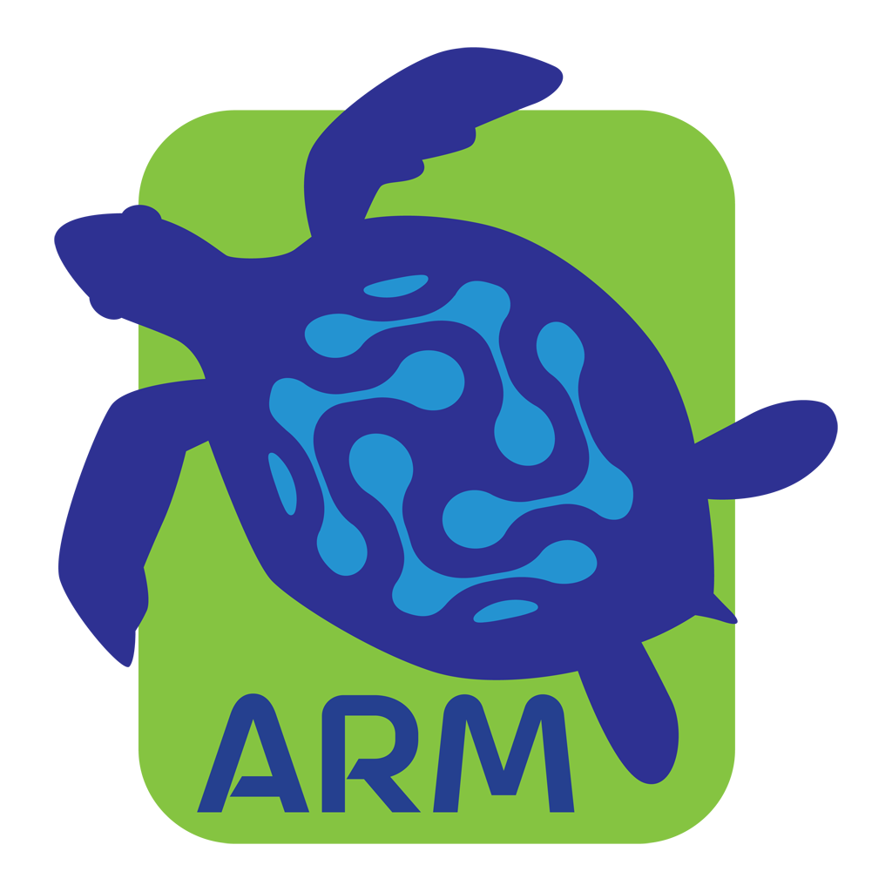

App for Reserve Management by Nature Seychelles
If you need help with the Cousin Island ARM app or have any questions, please reach out to us:
Nature Seychelles
Centre for Environment and Education
Roche Caiman, Mahé, Seychelles
Email: corinne@natureseychelles.org
Website: www.natureseychelles.org
Cousin Island ARM (App for Reserve Management) is a conservation field work application used by the Nature Seychelles team to manage and monitor Cousin Island Special Reserve. The app supports turtle nesting surveys, seabird monitoring, beach cleaning, vegetation surveys, GPS tracking, and other conservation activities.
Your account is created by your team administrator. Use the email address and password provided to you by Nature Seychelles. If you have forgotten your password, contact your administrator.
Yes. The app is designed to work fully offline on Cousin Island, where internet connectivity is limited. All data entered offline is stored on your device and automatically synchronised when a connection becomes available.
Data syncs automatically when your device connects to the internet. You can also trigger a manual sync from the home screen. Ensure you sync regularly to keep your data backed up.
The app supports over-the-air (OTA) updates. When a new version is available, you will be prompted to update. For major updates, you may need to download a new version from the App Store or from your team administrator.
Try closing and reopening the app. If the issue persists, ensure you are running the latest version. If the problem continues, contact us at corinne@natureseychelles.org with a description of the issue and your device model.
The app is intended for authorised Nature Seychelles staff, conservation officers, and volunteers working on Cousin Island Special Reserve. Access is managed by the reserve management team.
For information about how we handle your data, please read our Privacy Policy.